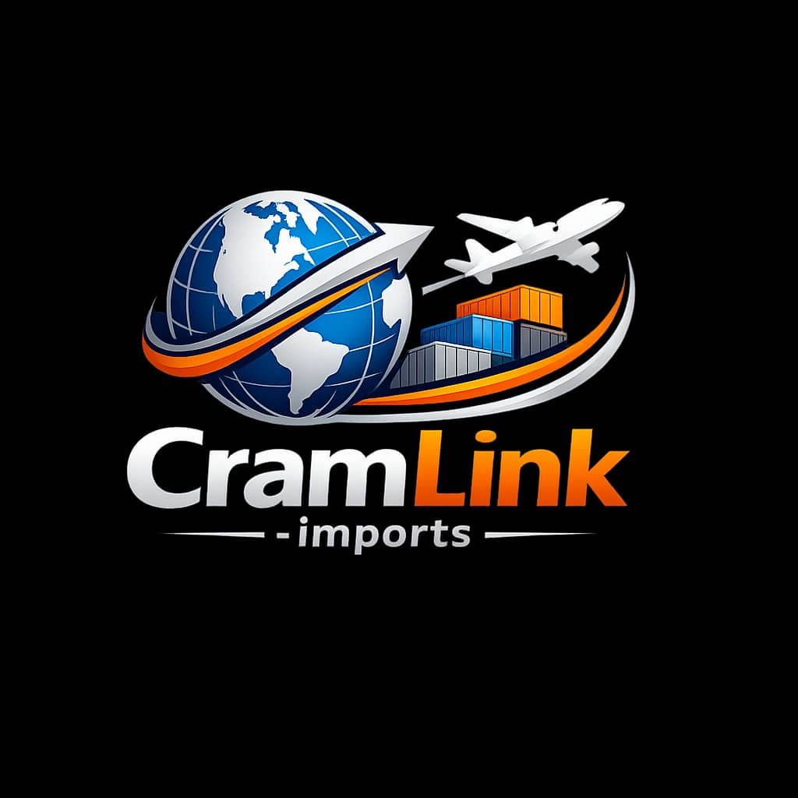

Your Gateway Global Shopping.
CramLink wants to be Convenient

How It Works
CramLink-imports helps customers in Botswana buy products from international stores and collect them locally through secure ordering and shipping systems.
- Create an account through CramLink-imports.
- submit product link.
- We order, handle the shipping and customs clearance.
- Collect your order at our local collection point.
Why Choose CramLink-imports?
- Access to a wide range of international products.
- Secure and reliable shipping services.
- Competitive pricing and transparent fees.
- Dedicated customer support.
View International Stores
Browse through the following international marketplaces to find the products you're looking for:
Contact Us
If you have any questions or need assistance, please feel free to engage with us through our social media channels
- Call Us
Connect With Us
Follow us for more info and engagement:
or you can directly contact us through email at:
contact CramLink for more information.
About us
Smart Parcel Import & Consolidation Service
PROPOSED BUSINESS NAME:
CramLink Imports
LOCATION:
operations in Gaborone, serving customers across Botswana.
1. Executive Summary CramLink Imports is a logistics and e-commerce facilitation service that enables individuals and small businesses in Botswana to purchase products from international platforms and receive them through a consolidated, cost-efficient shipping system. The company will handle: international ordering assistance parcel consolidation in China freight forwarding to Botswana customs coordination local parcel distribution. The venture leverages digital systems developed internally as part of the founder’s academic projects in web development, Java programming, and computer systems installation, allowing the business to operate efficiently with low overhead. The company will generate revenue through: shipping margins service fees bulk import services for small retailers.
2. Problem Statement Consumers and small retailers in Botswana face significant challenges when attempting to purchase goods internationally. Major barriers include: Complex international shipping processes High courier costs for individual shipments Lack of reliable local import intermediaries Limited parcel tracking and logistics transparency. These issues discourage many consumers from purchasing goods available on global platforms. Popular platforms used by Botswana consumers include: Alibaba Group AliExpress Amazon Shein However, most customers require assistance navigating these systems.
3. Business Solution CramLink Imports provides a simple, centralized import service. Customers submit product links from international online stores. The company manages the entire process from ordering to delivery. Core Services Product sourcing assistance Parcel consolidation in China International freight shipping Customs handling Local parcel pickup and delivery. This system significantly reduces shipping costs while simplifying the buying process.
4. Target Market Primary customer segments: Individual Consumers Urban residents seeking affordable access to international products such as: electronics clothing footwear cosmetics. Small Retailers Local traders importing inventory for resale. Online Resellers Entrepreneurs sourcing goods from international suppliers. The initial geographic focus is Gaborone, with future expansion nationwide.
5. Market Opportunity Botswana is heavily dependent on imported consumer goods. Demand for international products continues to grow as internet access expands. Key trends driving the opportunity include: increased online shopping growth of small online resellers high smartphone adoption rising interest in international fashion and electronics. However, logistics infrastructure for small-scale importers remains limited. CramLink-Imports addresses this gap.